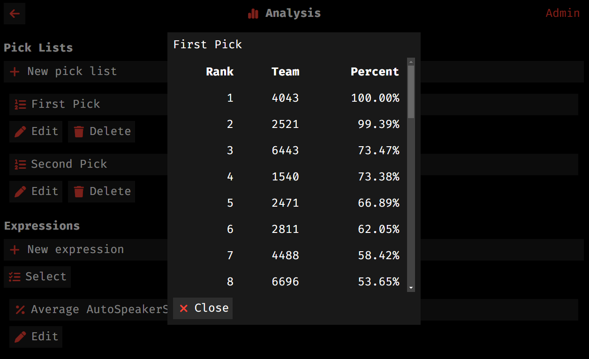
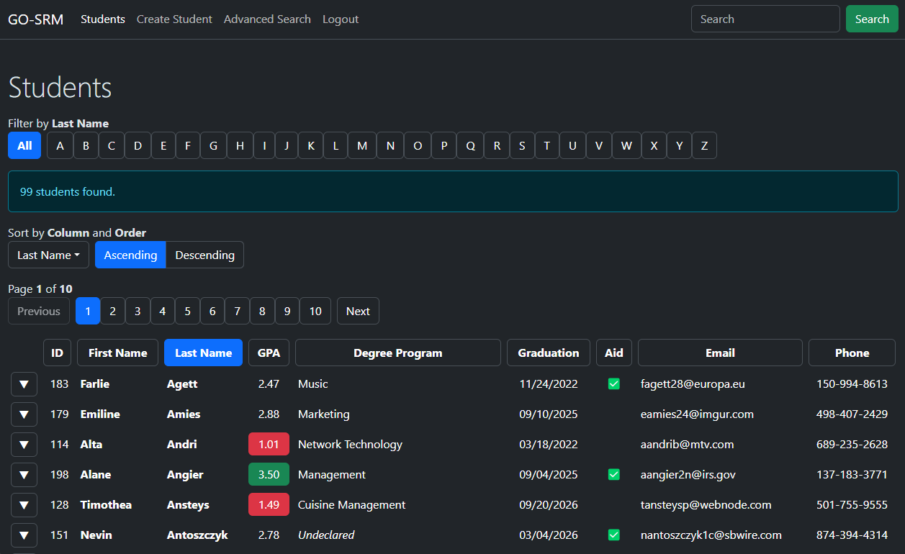
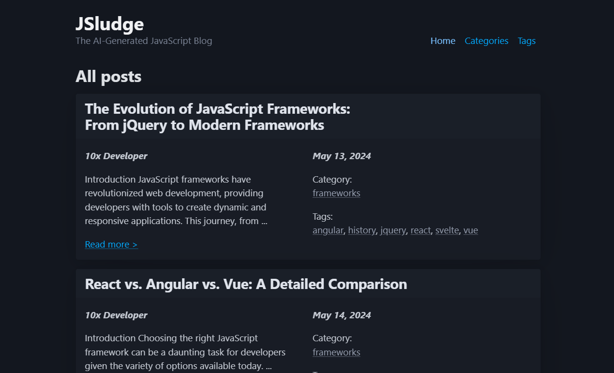
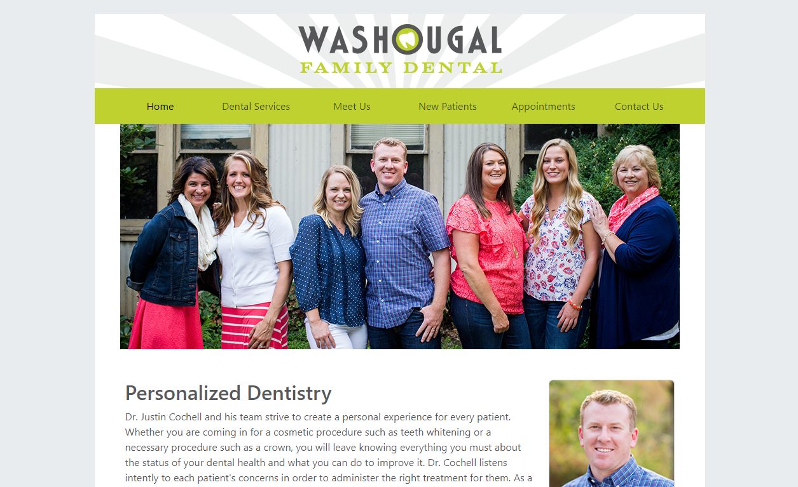
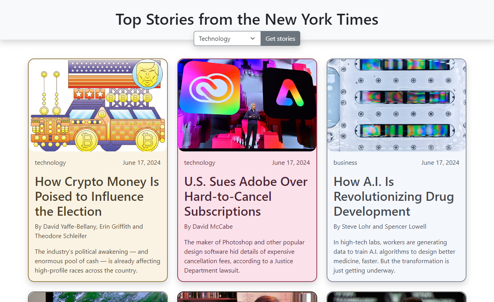
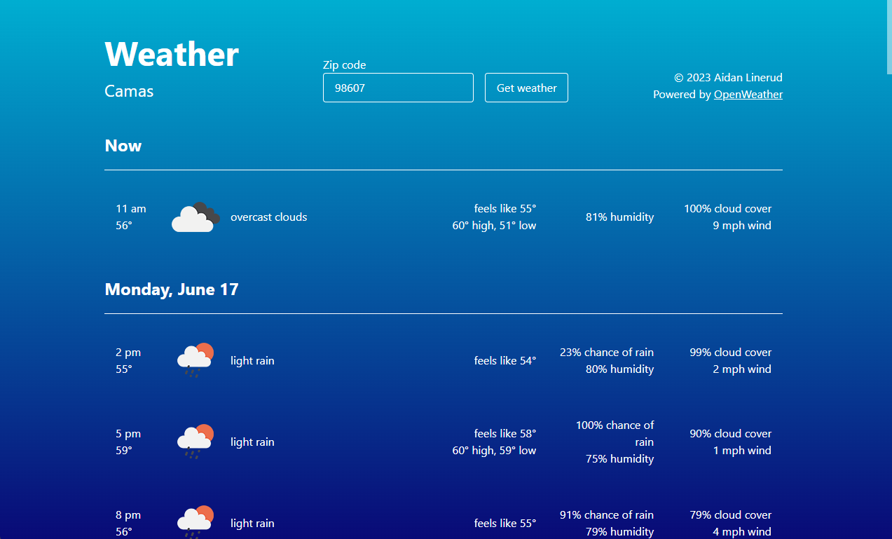

Aidan Linerud
Passionate web developer. Seeking opportunities to improve people's lives, bit by bit.

Passionate web developer. Seeking opportunities to improve people's lives, bit by bit.
I got my first webdev job as I was graduating from college. Really good timing!
I am working on a scheduling system powered by SvelteKit and C# / Entity Framework.
I was a part-time cashier and courtesy clerk.
I signed people up for the Summer Reading Program, logged hours, and issued prizes.
I've been in FIRST Robotics since FLL back in middle school. It's safe to say it's been an important part of my life. Most of my interest in web development was actually formed through robotics, especially as a member of Team Mean Machine.
I work with students to strengthen their web-dev skills through important and engaging projects.
We are brainstorming a system that does a few things at once:
Most importantly, this will be a very interesting project for newer students to jump on board with.
In the meantime, we are using tools like Jira and GitHub Projects.
We are maintaining the web app we use to scout other teams during competition. Recent improvements include:

Created app for robot performance data collection - Svelte, PWA
Team website maintenance - WordPress
Not listed here are the endless amount of hours spent searching Google and StackOverflow, and RTFM.
Student Record Manager - PHP, MySQL, CRUD, Bootstrap  I later recreated this project in Go with templ.
JSludge - PHP, MySQL, PicoCSS 
Friends of the White Salmon River
redesign - WordPress, Figma (group project)

Washougal Family Dental front page redesign - HTML, CSS, Bootstrap 
New York Times Feed App - JS, NY Times API, Bootstrap 
Weather App - JS, OpenWeather API 
Graduated w/ 3.8 GPA
The Camasonion maintenance - WordPress (2020-2021)